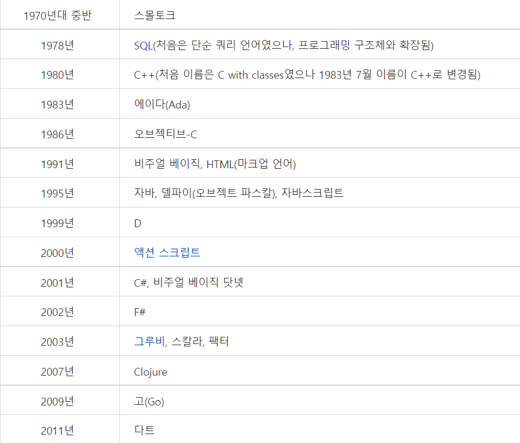
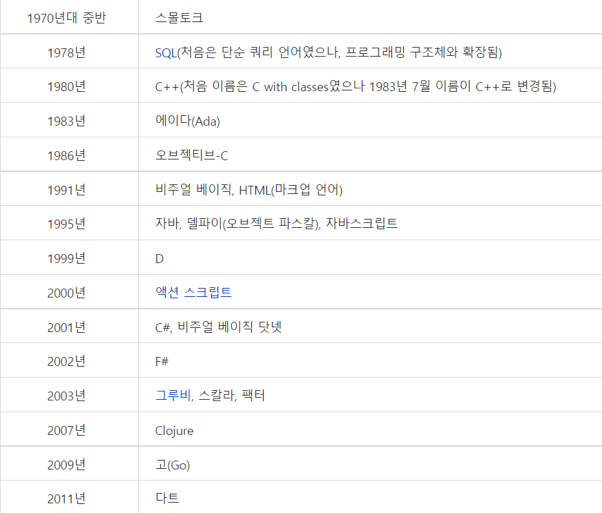
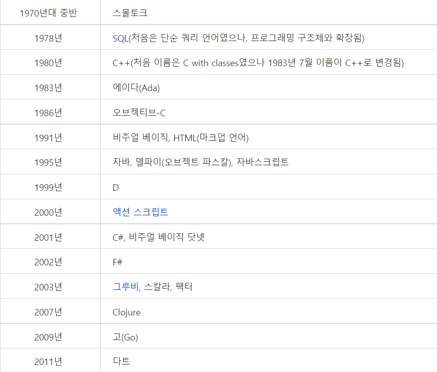

프로그래밍이라는 주제를 선택한 이유는 웹사이트를 만드는 코딩 강의를 들으면서 HTML 태그가 재미있었고 프로그래밍 언어의 역사를 짧게 알려줄 때에 더 알고싶다는 생각을 했었다. 또한 프로그래밍 언어가 종류 별로 뭐가 다른지 궁금하기도 해서 이 주제를 선정하였다.
역사와 발전단계
1세대 언어는 컴퓨터가 인식할 수 있는 기계어를 말하며. 즉 0과 1로 구성된 언어를 의미한다. 기계어는 컴퓨터가 사용하는 언어로 이해하면 된다.
2세대 언어는 첫 번째 프로그래밍언어라고 할 수 있지만, 기계어에 가까운 언어이다. 따라서 0과 1로 구성된 기계어의 불편함을 개선하기 위해 기계어를 일부 기호화한 언어라 볼 수 있다. 그러나 현재는 특수한 분야를 제외하고는 거의 사용되지 않고 있다.
3세대 언어는 본격적인 프로그래밍언어라 할 수 있으며 주로 절차지향 중심의 언어들이 개발되었다. C, 포트란, 코볼, 베이식 언어 등이 개발되었으며, C 언어는 현재까지도 광범위한 응용 분야에서 많이 사용되고 있다.
4세대 언어는 대용량 데이터를 처리하기 위한 데이터베이스 관련 프로그램을개발할 수 있는 언어이다. 이 언어들은 주로 윈도우(Windows)에서 쉽게 프로그램을 개발할 수 있는 환경을 제공하고 있다. 현재 4세대 언어의 사용은 5세대 언어의 등장으로 점차 사용이 줄어들고 있는 추세이다.
5세대 언어는 본격적인 객체지향 언어라고 할 수 있는데 네트워크 관련 기능이 강화된 언어이다. 대표적인 언어로 Java 언어와 C++, C# 등이 있다. 또한 웹의 등장으로 인해 웹과 데이터베이스를 쉽게 연결하여 프로그램을 개발할 수 있는 ASP, JSP, PHP 등의 언어들이 있다.
프로그래밍언어의 발전 추세를 살펴보면 다음의 표와 같다.
<
파이썬
네덜란드 개발자가 만든 프로그래밍 언어
파이썬은 네덜란드 개발자 귀도 반 로섬(Guido van Rossum)이 만든 언어다.
ABC 언어 프로젝트가 시작된 지 4~5년이 지나자, CWI는 눈에 띄는 성과가 없다는 이유로 프로젝트를 종료시켰다.
이 과정에서 귀도 반 로섬은 같은 회사의 ‘아모에바’라는 팀으로 옮겨 마이크로 커널 기반 분산시스템 환경에 대해 연구하는 일을 진행했다.
ABC 언어 개발과 분산시스템 연구는 파이썬을 만드는 데 중요한 영감을 주었다.
귀도 반 로섬은 “아모에바 프로젝트에 일하면서 하이레벨 언어가 필요하다는 것을 더욱 깨달았다”라며
“새로운 분산환경 시스템에 맞으면서 C와 셀에서 부족한 부분을 채워주는 새로운 언어를 개발하고 싶었다”라고 설명했다.
그렇게 해서 그는 취미활동으로 새로운 언어를 개발하기 시작했다.
‘파이썬(Python)’이란 영어의 의미는 원래 그리스 신화에 나오는 뱀 이름이다.
파이썬 로고에 두 개의 뱀이 서로 마주본 듯한 그림이 있는 이유도 이 때문이다.
하지만 귀도 반 로섬이 실제 ‘파이썬’이란 단어를 선택할 당시에는 그리스 신화를 참고한 것은 아니었다.
영국 (BBC) 방송의 코미디 프로그램인 ‘몬티 파이썬 비행 서커스(Monty Python's Flying Circus)’를 좋아해 가져온 단어였다.
파이썬 공식 홈페이지에 따르면 “귀도 반 로섬은 짧고, 특별하고,
미스터리한 느낌의 단어를 찾았다”라며 “그래서 파이썬이란 이름을 결정했다”라고 설명돼 있다.
귀도 반 로섬은 1989년부터 본격적으로 파이썬을 개발하기 시작했고,
1990년 파이썬의 첫 버전을 공개했다. 처음 버전은 CWI 내 동료들이 대부분 이용했으며, 그들의 피드백을 거쳐 개선돼 왔다.
1990년 이후에는 CWI가 아닌 외부에서 파이썬에 대한 소규모 세미나와 워크샵이 열리기 시작했다.
이때부터 몇몇 기업들은 파이썬을 실제 서비스에 하나둘 도입하기 시작했다.
귀도 반 로섬은 CWI 이후 CNRI, 비오픈닷컴, 잡코퍼레이션 등에 여러 단체와 기업에서 근무하며 파이썬만 전문적으로 개발했다.
이 과정에서 그는 파이썬에 대한 안정성을 높이고, 오픈소스 라이선스도 좀 더 유연하게 변경했다.
현재 파이썬은 대형 글로벌 기업부터 스타트업까지 다양하게 안정적으로 활용되고 있다.
구글, 야후, 유럽 입자 물리 연구소(CERN), 미국항공우주국(NASA) 등이 파이썬을 이용해 서비스를 구축했다.
장점
생산성이 높다.
문법이 간결하고 표현 구조가 인간의 사고 체계와 닮아 있다.
초보자도 쉽게 배울 수 있다.
파이썬은 또한 외부에 풍부한 라이브러리가 있어 다양한 용도로 확장하기 좋다. 실제로 파이썬은 웹 개발 뿐만 아니라 데이터 분석, 머신러닝, 그래픽, 학술 연구 등 여러 분야에서 활용되고 있다.
단점
속도가 느리다는 평가가 있다.
모바일 앱 개발 환경에서 사용하기 힘들다.
컴파일 시 타입 검사가 이뤄지지 않아 개발자가 실수할 여지가 조금 더 많다거나 멀티코어를 활용하기 쉽지 않다는 지적도 있다.
Java
Java란?
객체 지향 프로그래밍 언어로서 보안성이 뛰어나며 컴파일한 코드는 다른 운영 체제에서 사용할 수 있도록 클래스(class)로 제공된다. 객체 지향 언어인 C++ 언어의 객체 지향적인 장점을 살리면서 분산 환경을 지원하며 더욱
효율적이다.
Java의 특징
자바는 간단하다 (simple)
하나의 소프트웨어가 제작될 때는 소프트웨어를 제작하는 비용도 많이 들지만 유지 보수하는 비용도 어마어마하다. 자바 언어는 이러한 점을 고려하여 디자인되었다. 자바 언어는 C++를 기반으로 개발되었음에도 C++에서 혼란을 일으키는 부분을 제거했다. 예를 들면 연산자 오버로딩, 다중 상속 같은 것들이다. 그리고 C++에서 문제가 되는 기억 장소 경영 문제를 자동 쓰레기 회수와 할당(auto garbage collection)으로서 극복했다. 그러므로 프로그래머는 이것에 더이상 신경을 쓸 필요가 없다.
자바는 객체 지향 언어이다 (object-oriented)
요즘의 컴퓨터 언어는 객체 지향 언어로 개발된다. 자바도 객체 지향 언어이다. 객체 지향 언어에 대해 여기서 자세히 언급할 수는 없고 간단한 일례를 들면 상속이라는 것이 있다. 부모 객체로부터 자식 객체는 상속을 한다. 자식 객체가 부모 객체로부터 상속을 받으면 부모 객체의 데이터와 메소드를 사용할 수 있음을 의미한다. 따라서 소프트웨어를 개발할 때 재활용 측면에서 많은 장점을 가진다.
자바는 보안에 강하다 (secure)
자바는 원래부터 네트워크 분산 처리 환경에서 사용하기 위해 디자인된 언어이다. 네트워크 환경은 다른 환경보다 보안의 측면이 강조되는 환경인 만큼 자바는 보안에 중점을 두고 있다. 자바는 바이러스가 침투하지 못하는 구조를 가지고 메모리에서 데이터 접근을 제한할 수 있다. 접근을 허용하지 않으면, 애플리케이션의 데이터 구조 또는 데이터에 대한 접근은 불가능하다.
자바 아키텍처는 중립적이다 (architecture neutral)
네트워크는 다양한 기종의 컴퓨터와 다양한 플랫폼(예를 들면, 윈도 NT, 솔라리스, 매킨토시 OS 등의 운영 체제를 일컫는 말이다)과 다양한 하드웨어로 이루어져 있다. 자바는 자바 코드 소스를 컴파일하여 바이트 코드를 만들어내며 이 바이트 코드는 다양한 플랫폼에 설치된 자바 인터프리터에 의해 해석되기 때문에 어떠한 플랫폼에서도 실행 가능하다. 따라서 새로운 기계라도 자바 인터프리터만 설치되어 있으면 바이트 코드를 해석할 수 있다.
자바는 이식성이 높다 (portable)
기존의 언어는 각각의 플랫폼마다 수치 연산 문제 등으로 인하여 약간씩 다른 코드를 사용한다. 그러나 자바는 이식성이 강하여 다른 운영 체제, 다른 CPU에서도 같은 코드를 사용할 수 있다. 이식성이 높을 때의 단점은 각각의 시스템의 특성을 고려하지 않기 때문에 최적의 성능을 얻어낼 수 없는데, 자바는 이러한 것을 극복한 언어이다.
C언어
C언어란?
미국 벨 연구소의 리치(D. Ritchie)가 개발한 운영 체제나 언어 처리계 등의 시스템 기술에 적합한 프로그래밍 언어. 기본적인 프로그램 구조가 기술 가능하고, 비트 조작 등 세밀한 기술도 가능하다. 미니컴퓨터용 운영 체제인 유닉스의 대부분은 이 언어로 기술되어 있다. 최근에는 마이크로컴퓨터용 소프트웨어의 공통화를 꾀하기 위한 언어로서 보급되고 있다.
장점
C언어는 다른 프로그래밍 언어보다 높은 호환성을 가지고 있어 어떤 CPU의 종류라도 기종을 가지리 않고 사용이 가능하며 다양한 활용이 가능하다.
다른언어에 비해 소스파일의 크기가 작기 때문에 실행 속도가 빠르며, 메모리를 효과적으로 사용할 수 있다.
드웨어를 제어하는데 특화되어 있다.
C언어는 사용할 확률이 높은 문법만 최소한으로 유지하고 사용 빈도가 낮은 문법은 사용자들이 스스로 구현하게 되고, 다른 언어에 비해 익숙하고 편하게 학습할 수 있다.
단점
다른 학습자가 프로그램의 내용을 이해하기 어려운 표현이 될 수도 있다.
완전한 고급언어에 비해서 상대적으로 배우기가 쉽지 않다.
운영체제인 UNIX를 기술하기 위한 언어로서 개발되었기 때문에 UNIX가 가 진 약점을 그대로 가지고 있다.
자료형의 검사기능이 미약하다.
혼합연산의 경우 연산 우선순위에 따라 자동 계산되므로 연산 우선순위를 모르면 잘못된 계산결과를 얻을 수 있다.
배열에서 첨자의 범위를 검사하는 기능이 미약하다.
프로그램을 모듈화하지 않으면 이해하기 어려운 프로그램이 되는 경우가 많다.
느낀점
프로그래밍 언어의 종류, 특징, 장단점 등을 알아보면서 모르는 단어가 많아 찾아보느라 더 오래걸렸던 것 같다. 그렇지만 최대한 이해하고 자료를 적으면서 프로그래밍 언어가 더 재미있게 느껴졌다. 그래서 프로그래밍 언어를 배워서 웹사이트나 어플리케이션을 만들어보고 싶다는 생각을 하게 되었다. 내가 구상해낸 것을 내가 직접 실현시킬 수 있다는게 너무 재밌을 것 같고 뿌듯할 것 같다.

 <
<